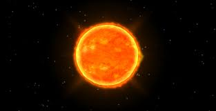

Sirius is also known as the Dog Star because it's part of the constellation Canis Major, which is Latin for "the greater dog". Brightness: Sirius is 25 times brighter than the Sun and has a surface temperature of 9,940 kelvins. Distance: Sirius is 8.6 light-years away from our solar system. Size: Sirius is 1.71 times the radius of the Sun.
Capella, sixth brightest star in the night sky and the brightest in the constellation Auriga, with an apparent visual magnitude of 0.08. Capella is a spectroscopic binary comprising two G-type giant stars that orbit each other every 104 days. It lies 42.2 light-years from Earth.
It is a giant star with an estimated diameter nearly 25 times the diameter of the Sun. Ptolemy described its color as golden-red, but more modern references characterize the star's rich color as yellow or pale orange. Arcturus is 37 light-years from Earth and radiates 115 times more light than the sun.
Canopus is one of the two brightest stars in the sky, second only to Sirius, the brightest star in the sky. Canopus, however, is only the second brightest star because Sirius is closer to Earth. Sirius is found 8.60 light years from the Sun, while Canopus lies 310 light years from the Sun.
Vega, brightest star in the northern constellation Lyra and fifth brightest in the night sky, with a visual magnitude of 0.03. It is also one of the Sun's closer neighbours, at a distance of about 25 light-years. Vega's spectral type is A (white) and its luminosity class V (main sequence).